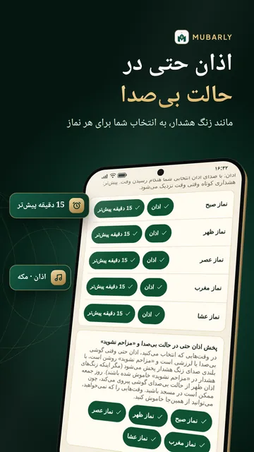
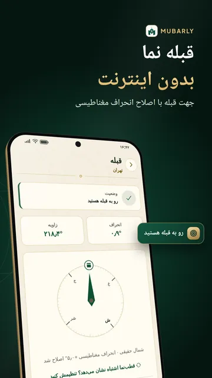
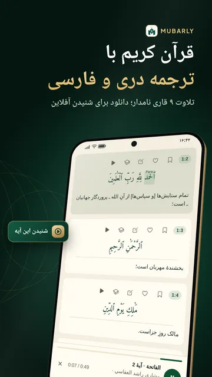
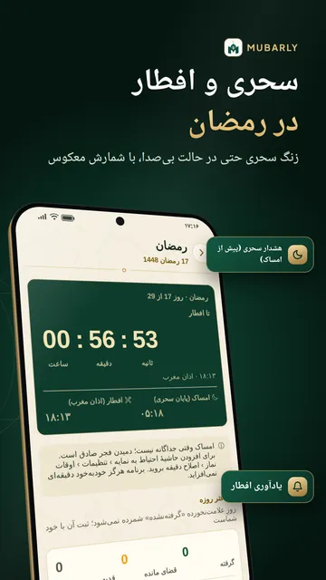
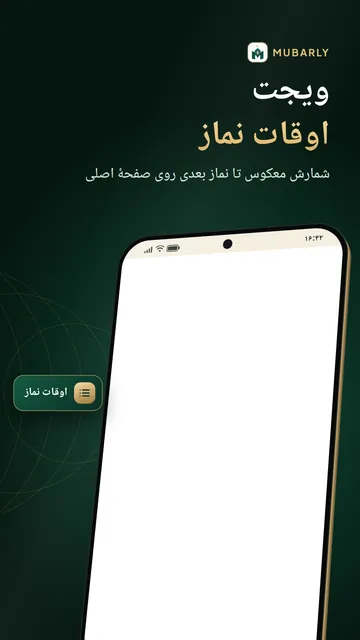
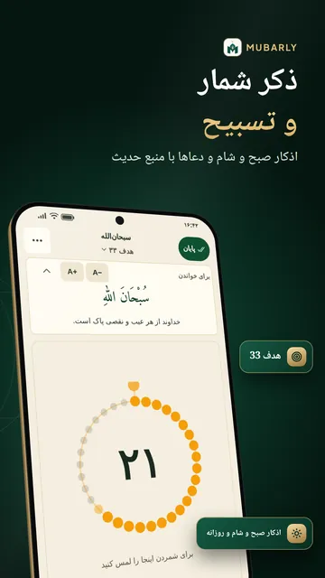
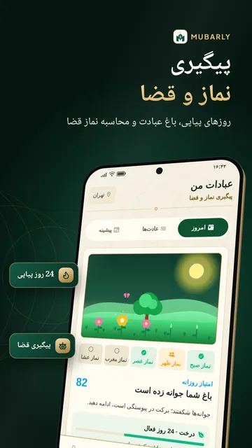

اوقات نماز اهل سنت







اوقات نماز اهل سنت و اذان گو در یک برنامه: Mubarly اوقات شرعی را برای افغانستان و هر جای جهان روی گوشی حساب میکند. اذان میتواند حتی در حالت بیصدا و «مزاحم نشوید» مانند زنگ هشدار پخش شود، به انتخاب شما برای هر نماز. قبله نما، قرآن کریم با ترجمه فارسی و دری، ذکر شمار و آموزش نماز هم در همین برنامه است.
اوقات نماز و اذان
- اوقات نماز پنجگانه به وقت کابل، هرات، مزار شریف، جلال آباد یا هر شهر دیگر با ۱۴ روش محاسبه؛ برای افغانستان روش کراچی با عصر حنفی از پیش تنظیم شده و قابل تغییر است
- صدای اذان مکه، مدینه یا مقام بالکانی (فقط تکبیرهای آغازین، حدود ۲۰ ثانیه)، زنگ ملایم یا فقط لرزش
- یادآوری ۵ تا ۶۰ دقیقه پیش از هر وقت و پیش از نماز جمعه، و پرسش «نماز خواندید؟» با پاسخ یکلمسی
- راهاندازی گامبهگام، اجازهها و تنظیمات باتری لازم را روشن میکند و اگر ممکن باشد هشدار دیر یا بیصدا برسد، خبر میدهد
- اوقات و هشدارها بدون اینترنت کار میکنند؛ گاهبهگاه برنامه را باز کنید
- سه ویجت (ابزارک) با شمارش معکوس تا وقت نماز بعدی و اوقات امروز؛ «خواندم» را از همانجا بزنید
- تقویم هجری قمری و تاریخ قمری امروز با روزها و شبهای مبارک، قابل تنظیم برای رؤیت ماه؛ جدول اوقات نماز ۳۰ روزه بهصورت PDF
قبله
- قبله نما با اصلاح انحراف مغناطیسی و هشدار در نزدیکی فلز؛ بدون اینترنت هم کار میکند
- قبله یاب با کمک خورشید، بدون قطبنما، و نمایش جهت کعبه روی نقشهٔ مسجدها
قرآن کریم
- رسمالخط عثمانی یا املایی و نمای ۶۰۴ صفحهای مصحف؛ متن عربی بدون اینترنت هم باز میشود
- ترجمه فارسی و ترجمه دری، اگر بخواهید یکی زیر دیگری؛ و با اینترنت، معنای کلمه به کلمه
- تلاوت ۹ قاری نامدار مانند العفاسی و عبدالباسط، با تکرار آیه
- دانلود هر سوره، جزء عمّ یا کل قرآن مجید (حدود ۱ گیگابایت) برای شنیدن آفلاین
- نشانهگذاری و یادداشت، حالت حفظ (پریمیوم)، الفبای قرآن و رادیوهای اسلامی
رمضان
- زنگ سحری با بلندی صدای زنگ هشدار، حتی در حالت بیصدا، که ۳ و ۶ دقیقه بعد تکرار میشود تا «بیدار شدم» را بزنید
- هشدار افطار، شمارش معکوس سحر و افطار، و امساکیه رمضان (جدول اوقات ۳۰ روزه)
- احکام روزه بر پایهٔ مذهب شما و دفتر روزه و تراویح
دعا، ذکر و حدیث
- اذکار صبح و شام و دعاهای روزانه برای خواب، سفر، سختی و بیماری، هر کدام با منبع حدیث
- ذکر شمار (تسبیح دیجیتال) با هدف ۳۳ تا ۱۰۰۰، تسبیحات پس از نماز و ذکرهای خودتان
- کتابخانهٔ حدیث با درجه و شرح، برنامهٔ «چهل حدیث» با روزی یک حدیث
- اسماء الله الحسنی، ۹۹ نام خدا با ترجمه فارسی
آموزش نماز، حج و عمره
- آموزش نماز گام به گام: وضو، نماز و غسل بر پایهٔ مذهب شما
- راهنمای حج و عمره: مناسک گام به گام، روزهای حج، دعاها، شمارندهٔ طواف و سعی و فهرست وسایل سفر
- داستان پیامبران و رویدادهای مهم تاریخ اسلام
پیگیری نماز و قضا
- هر نماز را سر وقت، با تأخیر یا با جماعت علامت بزنید و روزهای پیاپی و رشد باغ عبادت خود را ببینید
- محاسبه و پیگیری نماز قضا و روزهٔ قضا، و نماز مسافر
- بانوان روزهای حیض و نفاس را علامت میزنند بیآنکه نمازی قضا شمرده شود؛ فقط روی گوشی میماند
مسجد، زکات و عبادت با هم
- بیش از ۳۰۰٬۰۰۰ مسجد جهان روی نقشه با مسیر پیاده؛ در «مسجد من» اوقات جماعت و یادآوری پیش از آن
- محاسبه زکات طلا، نقره و پول نقد با قیمت روز یا قیمت دلخواه شما
- حالت خانواده، حلقهٔ ختم قرآن و بخش «همدلی» برای درخواست دعا و گفتن «آمین» (هر درخواست پیش از انتشار بررسی میشود)
برای همهٔ اهل سنت و جماعت
احکام عصر، روزه، قضا، زکات، سفر و روزهای عذر و راهنمای حج بر پایهٔ مذهبی است که خودتان برمیگزینید: حنفی، شافعی، مالکی یا حنبلی. مطالب همراه با منبع آمده است؛ برای مسائل شخصی از عالم دینی بپرسید.
دسترسپذیری و زبان
- حالت ساده با متن و دکمههای بزرگ، کنتراست بالا و پوستهٔ تیره؛ ۲۰ زبان از جمله فارسی، پښتو و اردو، کاملاً راستبهچپ
بخشهای عبادت برای همه رایگان است. تبلیغ تمامصفحهای در کار نیست و صفحههای قرآن، قبله، ذکر شمار و دعا هرگز تبلیغ ندارند. پریمیوم همهٔ تبلیغها را برمیدارد و حالت حفظ، بخش «خواب و تفکر» (صداهای آرام با زمانسنج خواب، تسبیحات پیش از خواب و تمرین تنفس) و پوستههای بیشتر قطبنمای قبله و ذکر شمار را میافزاید؛ یا با دیدن یک ویدیوی کوتاه، همهٔ امکانات پریمیوم را چند ساعت باز کنید.
حریم خصوصی: حساب لازم نیست (ورود اختیاری فقط برای پشتیبانگیری و همگامسازی)؛ بدون دسترسی به موقعیت مکانی در پسزمینه و بدون دوربین یا میکروفون؛ اوقات شرعی و قبله روی گوشی شما حساب میشود و Mubarly دادههای شما را نمیفروشد.